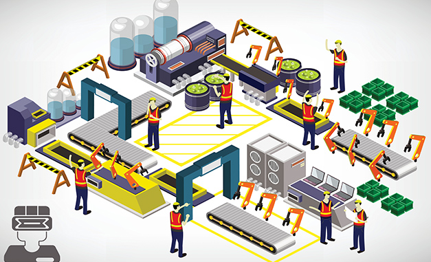
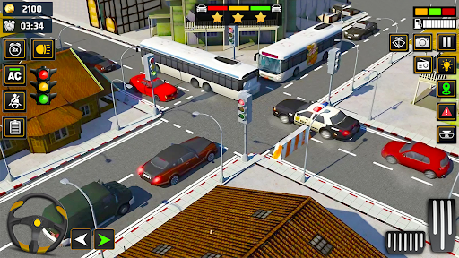

Casos de Éxito en Simulación
Simulación Quirúrgica
Plataforma de simulación quirúrgica que permite la formación práctica en técnicas médicas avanzadas.
Más información
Simulación en Cirugía Laparoscópica
Simulación que optimiza las habilidades quirúrgicas mediante prácticas controladas.
Más información
Simulador de Cataratas
Entrenamiento en cirugía de cataratas que mejora la experiencia médica mediante retroalimentación táctil en tiempo real.
Más información

Simulación de Procesos Industriales
Optimización de cadenas de producción mediante modelos de simulación avanzados.
Más información

Simulación de Tráfico
Análisis y mejora de la infraestructura vial mediante simulaciones detalladas de flujo vehicular.
Más información
Simulación Financiera
Modelos de simulación para prever comportamientos financieros y tomar decisiones estratégicas.
Más información